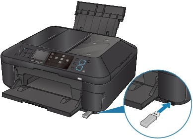

As preparation for printing through Bluetooth communication, you can change the settings such as the device name and passkey from the Bluetooth settings screen.
This section describes how to display the Bluetooth settings screen. For each setting item, see Bluetooth settings.
-
Make sure that the machine is turned on.
-
Attach the optional Bluetooth Unit BU-30.
Insert the Bluetooth Unit BU-30 into the Direct Print Port.
 -
Press the Setup button.
-
Select
 Device settings, then press the OK button.
Device settings, then press the OK button. -
Use the

 button to select Bluetooth settings, then press the OK button.
button to select Bluetooth settings, then press the OK button.The Bluetooth settings screen is displayed.